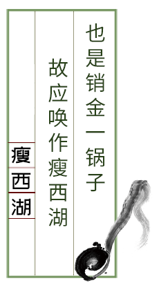

你最想游玩的景点是：
 扬州市瘦西湖风景区管理处是国家级风景名胜区。游览面积2.5 平方公里，清代康乾时期即已形成的湖上园林群，融南方之秀、北方之雄于一体。窈窕曲折的一湖碧水，串以徐园、小金山、五亭桥、白塔、二十四桥、万花园、双峰云栈等名园胜迹，风韵独具而蜚声海内外。 从隋唐开始，景区陆续建园，及至清代盛世，由于康熙、乾隆两代帝王的六次南巡 ，造就了"两岸花柳全依水，一路楼台直到山"的湖山盛况。俨然一副次第展开的国画长卷。历史上李白、杜牧、苏轼、朱自清等文化名人都很赞叹瘦西湖秀美的风光，留下众多脍炙人口的篇章。"烟花三月下扬州"、"绿杨城郭是扬州"等数不清的名言佳句，为瘦西湖增添了耀眼的浓墨重彩。 泛舟湖上，赏不尽湖光山色，听不完琴箫莺歌，美不够衣香人影。十里湖光，清澄缥碧；花木扶疏，连绵滴翠；亭台楼榭，错落有致；人文景观，独具风韵。瘦西湖正向八方游客敞开怀抱，热情欢迎远道而来的佳宾高朋。
|